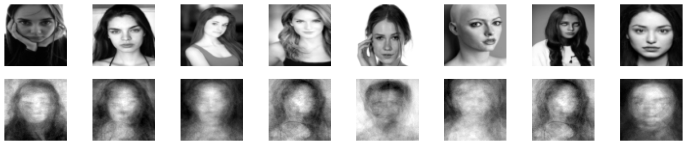

import numpy as np
import pandas as pd
import random
import os
import torch
from torchvision import datasets, models, transforms, utils
from PIL import Image
from torchvision import transforms
import matplotlib.pyplot as plt
X = np.random.rand(100,10)
X.shape
(100, 10)
S = np.cov(X.T, bias=True)
S=S.T
A = np.array([[1,2],[3,4]])
A
array([[1, 2],
[3, 4]])
A.T
array([[1, 3],
[2, 4]])
from numpy import linalg as LA
A = np.array([[1, 0], [0, 1]])
A
array([[1, 0],
[0, 1]])
w, v = LA.eig(A)
w
array([1., 1.])
import matplotlib as mpl
mpl.rcParams.update(mpl.rcParamsDefault)
plt.rcParams["image.cmap"] = "gray"
import torchvision
device = torch.device("cuda:0" if torch.cuda.is_available() else "cpu")
def set_seed(seed=42):
torch.manual_seed(seed)
np.random.seed(seed)
random.seed(seed)
set_seed(seed=42)
import glob
IMAGE_SIZE = 64
def read_img_dataset(data_dir, batch_size=64):
data_transforms = transforms.Compose(
[
transforms.Resize((IMAGE_SIZE, IMAGE_SIZE)),
transforms.Grayscale(num_output_channels=1),
transforms.ToTensor(),
transforms.Lambda(torch.flatten)
])
image_dataset = datasets.ImageFolder(root=data_dir, transform=data_transforms)
dataloader = torch.utils.data.DataLoader(
image_dataset, batch_size=batch_size, shuffle=True, num_workers=0
)
dataset_size = len(image_dataset)
class_names = image_dataset.classes
inputs, classes = next(iter(dataloader))
return inputs, classes
image_shape = (IMAGE_SIZE, IMAGE_SIZE)
image_shape
(64, 64)
def plot_sample_bw_imgs(inputs):
fig, axes = plt.subplots(1, 5, figsize=(10, 8), subplot_kw={"xticks": (), "yticks": ()})
for image, ax in zip(inputs, axes.ravel()):
ax.imshow(image.reshape(image_shape))
plt.show()
data_dir = "data/test"
file_names = [image_file for image_file in glob.glob(data_dir + "/*/*.jpg")]
n_images = len(file_names)
BATCH_SIZE = 128 # because our dataset is quite small
faces_inputs, classes = read_img_dataset(data_dir, batch_size=BATCH_SIZE)
faces_inputs.shape
torch.Size([128, 4096])
plot_sample_bw_imgs(faces_inputs[10:])
import torch
import torch.nn as nn
import torch.optim as optim
class Autoencoder(nn.Module):
def __init__(self):
super(Autoencoder, self).__init__()
self.encoder = nn.Sequential(
nn.Linear(IMAGE_SIZE * IMAGE_SIZE, 128),
nn.ReLU(),
nn.Linear(128, 64),
nn.ReLU(),
nn.Linear(64, 12),
nn.ReLU(),
nn.Linear(12, 3),
)
self.decoder = nn.Sequential(
nn.Linear(3, 12),
nn.ReLU(),
nn.Linear(12, 64),
nn.ReLU(),
nn.Linear(64, 128),
nn.ReLU(),
nn.Linear(128, IMAGE_SIZE * IMAGE_SIZE),
nn.Sigmoid(),
)
def forward(self, x):
x = self.encoder(x)
x = self.decoder(x)
return x
# Set up the model
model = Autoencoder()
# Set up the loss function and optimizer
criterion = nn.MSELoss()
optimizer = optim.Adam(model.parameters(), lr=0.001)
# Train the model
num_epochs = 40
i = 0
for epoch in range(num_epochs):
for data in faces_inputs:
img = data
#img = img.view(img.size(0), -1)
img = img.view(-1, IMAGE_SIZE*IMAGE_SIZE)
optimizer.zero_grad()
outputs = model(img)
loss = criterion(outputs, img)
loss.backward()
optimizer.step()
# Print some statistics
if (i+1) % 300 == 0:
print('Epoch [{}/{}], Step [{}/{}], Loss: {:.4f}'.format(epoch+1, num_epochs, i+1, len(faces_inputs), loss.item()))
i+=1
# Save the trained model
torch.save(model.state_dict(), 'autoencoder.pth')
Epoch [3/40], Step [300/128], Loss: 0.0279
Epoch [5/40], Step [600/128], Loss: 0.0869
Epoch [8/40], Step [900/128], Loss: 0.0636
Epoch [10/40], Step [1200/128], Loss: 0.0359
Epoch [12/40], Step [1500/128], Loss: 0.0335
Epoch [15/40], Step [1800/128], Loss: 0.0561
Epoch [17/40], Step [2100/128], Loss: 0.0390
Epoch [19/40], Step [2400/128], Loss: 0.0439
Epoch [22/40], Step [2700/128], Loss: 0.0206
Epoch [24/40], Step [3000/128], Loss: 0.0234
Epoch [26/40], Step [3300/128], Loss: 0.0399
Epoch [29/40], Step [3600/128], Loss: 0.0417
Epoch [31/40], Step [3900/128], Loss: 0.0460
Epoch [33/40], Step [4200/128], Loss: 0.0541
Epoch [36/40], Step [4500/128], Loss: 0.0456
Epoch [38/40], Step [4800/128], Loss: 0.0583
Epoch [40/40], Step [5100/128], Loss: 0.0212
# Load the trained model
model = Autoencoder()
model.load_state_dict(torch.load('autoencoder.pth'))
# Load a batch of test images
data_dir = "data/test"
BATCH_SIZE = 10
faces_batch, classes = read_img_dataset(data_dir, batch_size=BATCH_SIZE)
# Flatten the test images
test_images = faces_batch.view(-1, IMAGE_SIZE * IMAGE_SIZE)
# Pass the test images through the autoencoder
with torch.no_grad():
outputs = model(test_images)
print(outputs.shape)
torch.Size([10, 4096])
# with torch.no_grad():
# outputs = model(test_images)
# plt.imshow(test_images[2].reshape(image_shape), cmap='gray');
# plt.imshow(outputs[2].reshape(image_shape), cmap='gray');
# Convert the tensors to numpy arrays
test_images = test_images.numpy()
outputs = outputs.numpy()
# Plot the original images and the reconstructed images
fig, axs = plt.subplots(2, 8, figsize=(20, 4))
for i in range(8):
axs[0, i].imshow(test_images[i].reshape(image_shape), cmap='gray')
axs[0, i].axis('off')
axs[1, i].imshow(outputs[i].reshape(image_shape), cmap='gray')
axs[1, i].axis('off')
plt.show()
